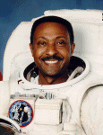

Lyndon B. Johnson Space Center
Houston, Texas 77058
|
National Aeronautics and Space Administration Lyndon B. Johnson Space Center Houston, Texas 77058 |
 |
Biographical Data |
||
Winston E. Scott (Captain, USN, Ret.)
NASA Astronaut (former)
PERSONAL: Born August 6, 1950, in Miami, Florida. Married to the former Marilyn K. Robinson. They have two children. He enjoys martial arts and holds a 2nd degree black belt in Shotokan karate. He also enjoys music, and plays trumpet with various bands along the Cape Canaveral Space Coast. In addition he remains an active pilot flying various aircraft. Winston's father, Alston Scott, resides in Miami, Florida. His mother, Rubye Scott, is deceased.
EDUCATION: Graduated from Coral Gables High School, Coral Gables, Florida, in 1968; received a bachelor of arts degree in music from Florida State University in 1972; a master of science degree in aeronautical engineering from the U.S. Naval Postgraduate School in 1980. Awarded honorary doctorates from Florida Atlantic University in 1996, and Michingan State University in 2007.
ORGANIZATIONS: American Institute of Aeronautics & Astronautics; Aircraft Owners and Pilots Association; Experimental Aircraft Association; Skotokan Karate Association; Association of International Tohgi Karate-Do; Bronze Eagles Association of Texas.
EXPERIENCE: Scott entered Naval Aviation Officer Candidate School after graduation from Florida State University in December 1972. He completed flight training in fixed-wing and rotary-wing aircraft and was designated a Naval Aviator in August 1974. He then served a 4-year tour of duty with Helicopter Anti-Submarine Squadron Light Thirty Three (HSL-33) at the Naval Air Station (NAS) North Island, California, flying the SH-2F Light Airborne Multi-Purpose System (LAMPS) helicopter. In 1978 Scott was selected to attend the Naval Postgraduate School at Monterey, California, where he earned his Master of Science degree in aeronautical engineering with avionics. After completing jet training in the TA-4J Skyhawk, Scott served a tour of duty with Fighter Squadron Eighty Four (VF-84) at NAS Oceana, Virginia, flying the F-14 Tomcat. In June 1986 Scott was designated an Aerospace Engineering Duty Officer. He served as a production test pilot at the Naval Aviation Depot, NAS Jacksonville, Florida, flying the F/A-18 Hornet and the A-7 Corsair aircraft. He was also assigned as Director of the Product Support (engineering) Department. He was next assigned as the Deputy Director of the Tactical Aircraft Systems Department at the Naval Air Development Center at Warminster, Pennsylvania. As a research and development project pilot, he flew the F-14, F/A-18 and A-7 aircraft. Scott has accumulated more than 5,000 hours of flight time in 20 different military and civilian aircraft, and more than 200 shipboard landings. Additionally, Scott was an associate instructor of electrical engineering at Florida A&M University and Florida Community College at Jacksonville, Florida.
Winston Scott retired from NASA and the U.S. Navy at the end of July 1999 to accept a position at his alma mater, Florida State University, as Vice President for Student Affairs. He was also associate dean in the FAMU/FSU College of Engineering.
In July 2003 Scott assumed the position of executive director of the Florida Space Authority. In this capacity he advised Florida’s governor and legislators on all matters related to space and aeronautics within the state of Florida. Scott was also a part time professor of aeronautics at the Florida Institute of Technology in Melbourne, Florida.
In September 2006 he became Vice President and Deputy General Manager of the engineering and science contract group for Jacobs Engineering in Houston, Texas.
Winston Scott’s new book, "Reflections From Earth Orbit," was published by Apogee Books, C.G. Publishers in July 2005 and is available from all book stores and on line distribution sources.
NASA SPACE FLIGHT EXPERIENCE: Scott was selected by NASA in March 1992, and reported to the Johnson Space Center in August 1992. He served as a mission specialist on STS-72 in 1996 and STS-87 in 1997, and has logged a total of 24 days, 14 hours and 34 minutes in space, including 3 spacewalks totaling 19 hours and 26 minutes.
STS-72 Endeavour (January 11-20, 1996) was a 9-day flight during which the crew retrieved the Space Flyer Unit satellite (launched from Japan 10-months earlier), deployed and retrieved the OAST-Flyer satellite, and conducted two spacewalks to demonstrate and evaluate techniques to be used in the assembly of the International Space Station. The mission was accomplished in 142 orbits of the Earth, traveling 3.7 million miles, and logged him a total of 214 hours and 41 seconds in space, including his first EVA of 6 hours and 53 minutes.
STS-87 (November 19 to December 5, 1997) was the fourth U.S Microgravity Payload flight, and focused on experiments designed to study how the weightless environment of space affects various physical processes, and on observations of the Sun's outer atmospheric layers. Scott performed two spacewalks. The first, a 7 hour 43 minute EVA featured the manual capture of a Spartan satellite, in addition to testing EVA tools and procedures for future Space Station assembly. The second spacewalk lasted 5 hours and also featured space station assembly tests. The mission was accomplished in 252 Earth orbits, traveling 6.5 million miles in 376 hours and 34 minutes.
MAY 2008
This is the only version available from NASA. Updates must be sought direct from the above named individual.